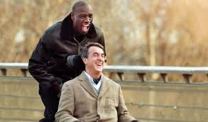
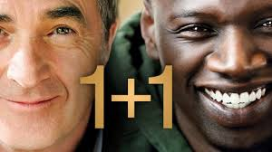
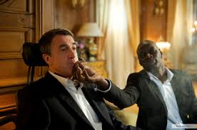
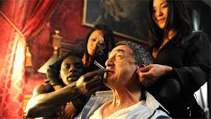
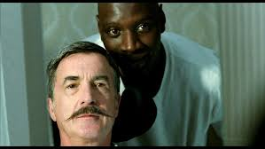
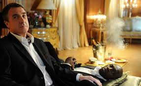

Назва :1+1
Рік : 2011
Країна : Франція
Жанр : Драма
Режисер : Олів'є Накаш, Ерік Толедано
Актори : Омар Сі , Франсуа Клюзе, Анн Ле Ні, Жозеф де Моp
Тривалість : 112 хв
Вікові обмеження : 16+
     
Філіп дуже багата людина, але в результаті нещасного випадку його паралізувало, і він прикутий до інвалідного крісла. Він втратив будь-який інтерес до життя, і потребує постійного нагляду. Для цих цілей наймаються доглядальниці, проте не одна з них довго не працює.
І ось одного разу, черговий доглядальницею Філіпа стає чорношкірий молодий хлопець на ім'я Дрісса, що вийшов зовсім недавно з тюрми.
Складно уявити таку людину в ролі доглядальниці, проте хлопець примудряється знайти спільну мову з Філіпом. Він не шкодує його, і ставиться до нього не як до інваліда, а як до здорової людини. Вони весело проводять час разом, і завдяки цьому Філіп починає дивитися на життя по новому, і навіть закохується.